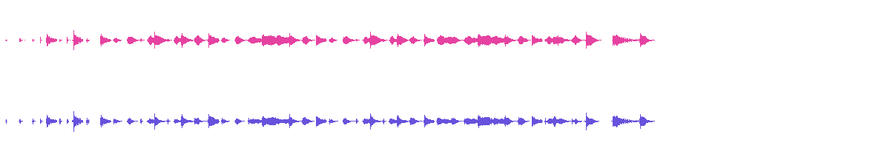

Give the chase a pulse.
Red Light. An original 30-second action score from our ACE-Step 1.5 Turbo workflow.
Our direction called for punchy drums, low strings and short brass accents: instrumental, 132 BPM, D minor. Hear the whole result.

The WAV is the unchanged delivered file: 48 kHz, 16-bit stereo. The full MP3 was encoded locally for this player. No musical cuts or added sounds.
Quote and delivery checked November 5, 2026. Music is separate from video generation, voice and editing. Review the selected tool’s live availability and complete quote before buying or starting.
Put the score under a scene.
The film above follows the actual Music Studio → Video Editor handoff. We selected our finished track, added an earlier clean 720p action master from our own library, and muted its original audio. The original footage stays unchanged.
Three consecutive ranges: 0–3.2, 3.2–15.6 and 15.6–18.89 seconds. All at 1×, full frame, original look, with no transitions or scene voices. The new soundtrack plays once across the edit at volume 1.
Download the complete 720p soundtrack film · 5.8 MB. Compare the earlier clean master and comedy cut.
The first caption reads “Hear the chase.” The final range reads “Music + action · seedancecheap.com”. The downloaded file is the native delivered export; no local video or audio finishing was added.
Completed November 5, 2026. The earlier footage does not demonstrate the new budget video option. Its Seedance 2.5 promotional price remains paused during model verification. Review each tool’s live availability and complete quote before buying or starting.
Direct the rhythm.
- Open Music Studio in Studio 2. Choose Instrumental · no vocals and 30 seconds.
- Set 132 BPM, D minor and WAV. Paste our direction or write your own.
- Review the complete quote. If the tool is available and you accept, follow that saved request to delivery.
- Listen to the complete track and download useful files within the displayed 48-hour storage period.
Musical style and timing can vary. This example demonstrates one delivered internal music request. It does not demonstrate customer checkout or video generation.
Original instrumental score for a fast action comedy. Start on the first beat: dry punchy drums, staccato low strings and short muted brass accents. 132 BPM, D minor, tight dynamic rhythm, playful tension, crisp percussion transients and space for footsteps and impacts. Introduce a brief stop and one light plucked-string answer around the middle, then return to the chase pulse. No vocals, choir, speech or long ambient intro. Avoid dense wall-of-sound mastering; keep room for the scene audio.
Exact direction used for this completed score.
Production notes and scope
The SeedanceCheap team generated this score with our independent ACE-Step 1.5 Turbo engine. The native request selected instrumental, 30 seconds, WAV, 132 BPM and D minor. Its accepted quote was 0.25 credit. The native WAV fully decodes to 30 seconds at 48 kHz stereo. The MP3 player uses a complete local transcode.
The earlier failed pilot was preserved. This new request was reviewed only after Music Studio returned from an unavailable state, and it delivered successfully. Availability can change; this page shows a completed example.
AI-generated audio and cover subject. The cover frame comes from an earlier, separately priced AI action film. These are our internal demonstrations, prepared with Codex AI assistance.